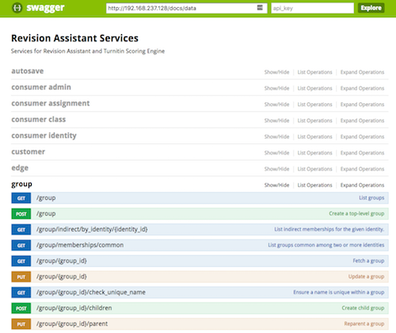

Microservices: moving parts around
Chris Winters
@cwinters
Turnitin
What are we doing here?
Talk about moving parts behind microservices
Why are we using microservices, and what are our plans?
How do they help and hinder?
Initial questions
Docker
Microservices
AWS/Azure/Google/...
Context
My biases and context
Small teams, small-ish companies
My biases and context
Deeply skeptical of magic
Relational database pro, ORM con
My biases and context
Kernighan on debugging applies to more than code
Ease cognitive load
Side-effects kill
A change in feature X also changes feature Y
Second order effect: fear, uncertainty, and doubt
Response: slather on that process!
Revision Assistant
Pittsburgh company! (previously: Lightside Labs)
Use machine learning to help students write better
Focus on drafting process
Where we started
Single app taking all requests; one per EC2
Single worker taking all async jobs; two-ish per EC2
Deployment via Ansible
Where we are now
App and worker => Docker containers
...still serve a lot of traffic
Created associated app served by separate microservices and tables
Re-architecting the workers to scale
Where we want to be
More pieces of the single app out into services
Merge duplicated data
Autoscale individual services
Why not?
Operating a single app is way easier
Easier to propagate patterns within single codebase
Everything is in one place... code and admin tools (Django)
One Approved Way to do things
Why not?
Reaching into another table is easy
No network call boundaries (latency)
Why?
Keep a thing in your head
Independence (concurrent projects)
...both of which help with speed
Disentangle via forced separation
Why?
Make side-effects explicit
Small vectors for experimenting
Scale at more granular level
Why? (Conway's Law)
...doesn't really apply to us, yet
But... I can do that now
Are microservices the only way to do these?

...but few teams exhibit discipline to do them in monolith
Constrain areas of uncertainty
Help where you're prone to get things wrong
...and enable freedom to experiment in others
What are the moving parts?
Deployment and configuration
Routing and load balancing
Monitoring
Logging
Recovery
12 Factor Echo
Smart people have already thought about this design
You really need to internalize this document and goals.
Just a few:
3. Config: Store in the environment
4. Backing services: Treat as attached resources
11. Logs: Treat as event streams
ECS basics: Cluster
EC2 instances providing compute pool of compute
Can be in single AZ or spread across
ECS basics: Task definition
Immutable metadata to run container
- Resource constraints
- Environment
- Docker image tag
- Linked containers
- ...generally, arguments to docker run...

ECS basics: Schedulers run tasks
Given resource constraints, where to put the task?
"Run task": go now, n times, and leave when you're done
"Service": go now, n times, and stick around...
...updates, rolling deploys, ELB, and autoscaling
How we use it
Single region, per-AZ clusters
production-app-1a, production-app-1c, ...
More overhead: duplicate deploys
Bonus: switch off an entire AZ
ECS: What's missing?
Deployment and configuration: OK to Amazing
Routing and load balancing: So-so
Monitoring: Meh
Logging: Meh
Recovery: OK
Developing a feature
Feature branch: work work work => push
Slack: make me a color environment
Slack: run end-to-end-tests
Slack: make me some classes
Test test test...
Developing a feature
code review
PR to staging, merge => deploys
PR to production, merge => deploys
Slightly different for front-end and services
Environments
Local + "Color"
All containers on one host
Includes datastores
Front-end deployed to S3
Extra containers for router, docs, mail
"Color"?
Deployable with slack
Specify different branches for different services
Constrain at Docker, assume other differences minimized for these purposes
Deployment
Local development can be in container, or not
CI/CD uses Codeship: builds and tests in containers
We currently do not use that same container to deploy
Does it matter?

Types of services
Basic flow from API call through the system


External services
Postgres, Redis, S3, Simple Queue Service, Simple Notification Service...
All configured through environment and URL
Logs collected on per-host container and forwarded to Loggly
Alerting
Two inputs: Loggly and NewRelic
Loggly: watch log entries for patterns
NewRelic: watch performance and exceptions for patterns
Both go to Slack (maybe elsewhere in the future?)
Service discovery: events
Events: coming up and going down
Docker knows about those!
Registrator picks them up and publishes name + address + port...
Service discovery: propagation
...to Consul. Distributed k/v store and service registry
Consul Template listens for Consul changes...
...and rewrites nginx config with contents, then gives it a HUP
Routing: central vs distributed
Two flavors of nginx:
1. Central: in front of the application routing from the internet
2. Distributed: on every host, acting as a client-side load balancer
Which is better?
"It depends"
Central is easier to monitor and manage, but SPOF
Distributed spreads out risk and load, but harder to manage and monitor
AWS recommends
Cluster of EC2 instances across AZs
ECS will spread containers across AZs
ELB per service (lots of services, lots of ELBs)
Ensure datastores are Multi-AZ
Sidebar: Missing factor
Documentation
First idea: one document to rule them all
What do you really want?
One place to read
Different than one place to write
Your instinct is to control at the wrong level
It's what you're comfortable with
You are mutable
Solve THAT problem
Control the format and API
Tool to collect and merge
Everything is a container
Control allows leverage
Constraints over control
What does that even mean?
Constraints: define the boundaries of a thing, hands off within
Control: define both what a thing must do and how it must do its job
What you know
Control illusory if not at right level
You'll probably get it wrong with something new
Developers: control coding standard, module layout, etc.
What problem are you trying to solve?
Example: ORMs
Why do you use them?
Small service: few entities, few relationships
Are you really going to switch databases?
Shouldn't you know SQL?
Constrain data access
Get away from integrating at data level - they live forever
Wrapping API around queries means you can control arbitrary access
Fewer connections, less to keep in your head
Few data lessons
Everything is relational (except caches)
...with some JSONB tables
We are using a single database... for now
Few data lessons
Services cannot peek into other services tables...
...except for reporting (still thinking about this)
Data affinity for read-only.
Emergent simplicity
"You get these emergent simplicities when the thing starts to take shape..." (Dan North)
As you pull small systems out of larger systems, keep your eyes open for commonalities or things to eliminate.
Left to do
Client per backend service
Testing service-to-service interactions
Monitoring improvements
Move to AWS blessed architecture?
Resources and references
- James Lewis and Martin Fowler: Microservices in a Nutshell which is a excerpted form of this article (Thoughtworks)
- Fight Club: "Stop trying to control everything and just let go..."
- Conway's Law (wikipedia); Sam Newman: Demystifying Conway's Law (Thoughtworks) and the Lewis/Fowler article above also has a section titled "Organized around Business Capabilities" that describes it well
- "You build it, you run it" Werner Vogels print interview (2006); also this podcast interview from the same time.
Resources and references
- 12 Factor Apps, plus a Cloud Native spin on them from @caseywest
- Casey also gave his Minimum Viable Platform talk at Devopsdays Minneapolis a week and a half ago.
- Adrian Cockroft has given loads of talks, this is a kind of best-of: Migrating to Cloud Native with Microservices, which includes a brief discussion of building per-service clients (slide 122).
Resources and references
- Steve Yegge's platform rant
- Dan North: Microservices: Software that fits in your head; you should just go ahead and watch his other presentations, including this one (from 2009!) that talks about the relationship between architecture and teams
- My pinboard links: microservices | architecture | docker | aws (you see the pattern...)